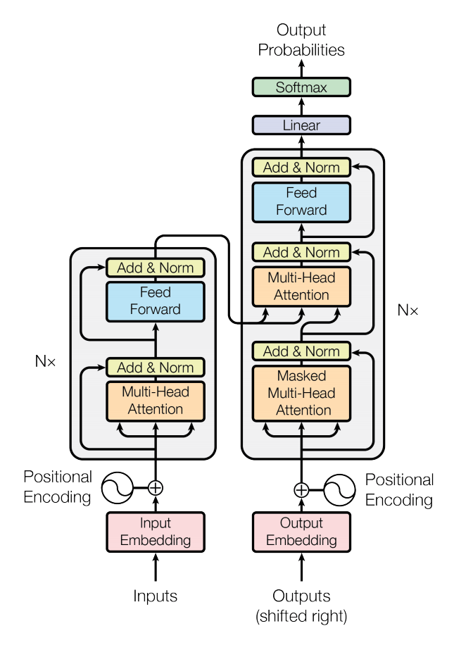

新版本: PyTorch 1.2 torchtext 0.4，torchaudio 0.3 和 torchvision 0.4
发布: 2019年8月8日
原文: PyTorch
翻译: ApacheCN
自PyTorch 1.0发布以来，我们已经看到社区扩展到添加新工具，为PyTorch Hub中可用的越来越多的模型做出贡献，并不断增加研究和生产中的使用。
从核心角度来看，PyTorch不断添加功能以支持研究和生产使用，包括通过TorchScript连接这两个世界的能力。今天，我们很高兴地宣布我们有四个新版本，包括PyTorch 1.2，torchvision 0.4，torchaudio 0.3和torchtext 0.4。您现在可以在pytorch.org上开始使用这些版本。
PyTorch 1.2
使用PyTorch 1.2，开源ML框架在生产使用方面向前迈出了一大步，增加了一个改进的，更加完善的TorchScript环境。这些改进使得更容易发布生产模型，扩展对导出ONNX格式模型的支持，并增强对 Transformers 的模块级支持。除了这些新功能之外，TensorBoard 现在不再具有实验性 - 您只需键入from torch.utils.tensorboard import SummaryWriter即可开始使用。
TORCHSCRIPT 改进
自从在PyTorch 1.0中发布以来，TorchScript已经为热切的PyTorch模型提供了生产途径。TorchScript编译器将PyTorch模型转换为静态类型的图形表示，为Python不可用的受限环境中的优化和执行提供了机会。您可以将模型逐步转换为TorchScript，将编译后的代码与Python无缝混合。
PyTorch 1.2显着扩展了TorchScript对PyTorch模型中使用的Python子集的支持，并提供了一种新的，更易于使用的API，用于将模型编译为TorchScript。有关详细信息，请参阅迁移指南 以下是新API的示例用法：
import torch
class MyModule(torch.nn.Module):
def __init__(self, N, M):
super(MyModule, self).__init__()
self.weight = torch.nn.Parameter(torch.rand(N, M))
def forward(self, input):
if input.sum() > 0:
output = self.weight.mv(input)
else:
output = self.weight + input
return output
# Compile the model code to a static representation
my_script_module = torch.jit.script(MyModule(3, 4))
# Save the compiled code and model data so it can be loaded elsewhere
my_script_module.save("my_script_module.pt")
要了解更多信息，请参阅我们的TorchScript简介和在C ++中加载PyTorch模型教程。
扩展了ONNX EXPORT
该ONNX社会继续以开放的成长治理结构和额外的指导委员会成员，特殊兴趣小组（SIG）和工作组（WGS）。与Microsoft合作，我们增加了对导出ONNX Opset版本7(v1.2)，8(v1.3)，9(v1.4)和10(v1.5)的全面支持。我们还增强了常量折叠传递，以支持最新版本的ONNX Opset 10。ScriptModule也得到了改进，包括支持多输出，张量工厂和元组作为输入和输出。此外，用户现在可以注册自己的符号来导出自定义操作，并在导出期间指定输入的动态尺寸。以下是所有主要改进的摘要：
- 支持多种Opset，包括在Opset 10中导出丢失，切片，翻转和插值的功能。
- ScriptModule的改进，包括支持多输出，张量工厂和元组作为输入和输出。
- 支持了十几个额外的PyTorch运营商，包括导出自定义运营商的能力。
- 许多重大修复和测试基础改进。
您可以在这里试用最新的教程，由@ lara-hdr在Microsoft提供。非常感谢整个Microsoft团队为完成此版本所做的所有努力！
NN.TRANSFORMER
在PyTorch 1.2中，我们现在包含一个标准的nn.Transformer模块，基于“ 注意就是你所需要的 ” 这篇论文。该nn.Transformer模块完全依赖于注意机制来绘制输入和输出之间的全局依赖关系。nn.Transformer模块的各个组件经过精心设计，可以独立使用。例如，nn.TransformerEncoder可以单独使用，不需要更大nn.Transformer。新API包括：
nn.Transformernn.TransformerEncoder和nn.TransformerEncoderLayernn.TransformerDecoder和nn.TransformerDecoderLayer

有关更多信息，请参阅Transformer Layers文档。有关完整的PyTorch 1.2发行说明，请参见此处。
域API库更新
PyTorch域库（如torchvision，torchtext和torchaudio）提供了对常用数据集，模型和变换的便捷访问，可用于快速创建最先进的基线。此外，它们还提供了常见的抽象，以减少用户可能不得不重复写入的样板代码。由于研究领域有不同的要求，围绕PyTorch出现了一个称为域API（DAPI）的专业库生态系统，以简化许多领域中新算法和现有算法的开发。我们很高兴发布三个更新的DAPI库，用于支持PyTorch 1.2核心版本的文本，音频和视觉。
TORCHAUDIO 0.3与KALDI兼容性，新变换

Torchaudio专注于机器理解音频波形。它是一个ML库，提供相关的信号处理功能（但不是一般的信号处理库）。它利用PyTorch的GPU支持为波形提供了许多工具和转换，使数据加载和标准化更容易，更易读。例如，它为使用sox的波形提供数据加载器，并为频谱图，重采样和mu-law编码和解码等转换提供数据加载器。
我们很高兴地宣布torchaudio 0.3.0的可用性，重点是标准化和复数，转换（重新采样）和两个新的功能（phase_vocoder，ISTFT），Kaldi兼容性和新教程。Torchaudio经过重新设计，是PyTorch的扩展，也是域API（DAPI）生态系统的一部分。
标准化
解决机器学习问题的重要工作是数据准备。在这个新版本中，我们更新了torchaudio的转换接口，以便围绕以下词汇和约定进行标准化。
假设张量具有通道作为第一维度，时间作为最后维度（适用时）。这使得它与PyTorch的尺寸一致。对于大小名称，使用前缀n_（例如“大小（n_freq，n_mel）的张量”），而维度名称不具有该前缀（例如“维度张量（通道，时间）”）。所有变换和函数的输入现在首先假定通道。这样做是为了与PyTorch保持一致，PyTorch具有通道，后跟样本数量。现在不推荐使用所有转换和函数的通道参数。
输出STFT是（通道，频率，时间，2），对于每个通道而言，列是特定窗口的傅里叶变换，因此当我们水平移动时，我们可以看到每列（傅里叶变换波形）随时间变化。这符合librosa的输出，使我们不再需要在我们的测试比较，转用Spectrogram，MelScale，MelSpectrogram，和MFCC。此外，由于这些新的惯例，我们弃用LC2CL并且BLC2CBL用于从一种信号形状转换到另一种形状。
作为此版本的一部分，我们还通过尺寸张量（...，2）引入对复数的支持，并提供magphase将这样的张量转换为其幅度和相位，以及类似complex_norm和angle。
README中提供了标准化的详细信息。
功能，转换和Kaldi兼容性
在标准化之前，我们将状态和计算分成了torchaudio.transforms和torchaudio.functional。
作为转换的一部分，我们在0.3.0中添加了一个新的转换：Resample。Resample可以将波形上采样或下采样到不同的频率。
作为功能的一部分，我们将介绍：phase_vocoder一个相位声码器，用于改变波形的速度而不改变其音调，并且ISTFT反向STFT实现与PyTorch提供的STFT兼容。这种分离允许我们使函数弱脚本化并在0.3.0中使用JIT。因此，我们有以下的转换JIT和CUDA支持：Spectrogram，AmplitudeToDB（原名SpectrogramToDB）MelScale， MelSpectrogram，MFCC，MuLawEncoding，MuLawDecoding（原名MuLawExpanding）。
我们现在还提供与Kaldi的兼容接口，以简化入门并减少用户对Kaldi的代码依赖性。我们现在有一个接口spectrogram，fbank和resample_waveform。
新教程
为了展示新的约定和转换，我们有一个新的教程，演示如何使用torchaudio预处理波形。本教程将介绍加载波形并对其应用一些可用转换的示例。
我们很高兴看到torchaudio周围的活跃社区，并渴望进一步发展和支持它。我们鼓励您继续使用本教程和可用的两个数据集进行实验：VCTK和YESNO！他们有一个界面来下载数据集并以方便的格式预处理它们。您可以在此处的发行说明中找到详细信息。
带有监督学习数据集的TORCHTEXT 0.4
torchtext的一个关键重点领域是提供有助于加速NLP研究的基本要素。这包括轻松访问常用数据集和基本预处理管道，以处理基于原始文本的数据。torchtext 0.4.0版本包括几个受欢迎的监督学习基线，带有“一个命令”的数据加载。包含一个教程，以说明如何使用新数据集进行文本分类分析。我们还添加并改进了一些函数，例如get_tokenizer和build_vocab_from_iterator，以便更容易实现未来的数据集。其他示例可以在这里找到。
文本分类是自然语言处理中的一项重要任务，具有许多应用，例如情感分析。新版本包括几个用于监督学习的流行文本分类数据集，包括：
- AG_NEWS
- SogouNews
- DBpedia中
- YelpReviewPolarity
- YelpReviewFull
- 雅虎知识堂
- AmazonReviewPolarity
- AmazonReviewFull
每个数据集都有两个部分（训练与测试），并且可以使用单个命令轻松加载。数据集还支持ngrams功能，以捕获有关本地字顺序的部分信息。请查看此处的教程，以了解有关如何将新数据集用于监督问题（如文本分类分析）的更多信息。
from torchtext.datasets.text_classification import DATASETS
train_dataset, test_dataset = DATASETS['AG_NEWS'](ngrams=2)
除了域库之外，PyTorch还提供了许多工具来简化数据加载。用户现在可以使用一些支持良好的工具加载和预处理文本分类数据集，例如torch.utils.data.DataLoader和torch.utils.data.IterableDataset。以下是使用DataLoader包装数据的几行代码。更多例子可以在这里找到。
from torch.utils.data import DataLoader
data = DataLoader(train_dataset, collate_fn=generate_batch)
TORCHVISION 0.4支持视频
视频现在是torchvision的一流公民，支持数据加载，数据集，预训练模型和变换。Torch 的0.4版本包括：
- 用于读/写视频文件（包括音频）的高效IO原语，支持任意编码和格式。
- 标准视频数据集，与
torch.utils.data.Dataset和兼容torch.utils.data.DataLoader。 - 基于Kinetics-400数据集构建的预训练模型，用于视频（包括训练脚本）的动作分类。
- 用于训练您自己的视频模型的参考训练脚本。
我们希望在PyTorch中处理视频数据尽可能简单，而不会影响性能。因此，我们避免了需要事先重新编码视频的步骤，因为它会涉及：
- 一个预处理步骤，它复制数据集以重新编码它。
- 时间和空间的开销，因为这种重新编码非常耗时。
- 通常，应使用外部脚本来执行重新编码。
此外，我们提供了诸如实用程序类之类的API，VideoClips通过创建一组视频中所有剪辑的索引，简化了在视频文件列表中枚举固定大小的所有可能剪辑的任务。它还允许您为视频指定固定的帧速率。下面提供了API的示例：
from torchvision.datasets.video_utils import VideoClips
class MyVideoDataset(object):
def __init__(self, video_paths):
self.video_clips = VideoClips(video_paths,
clip_length_in_frames=16,
frames_between_clips=1,
frame_rate=15)
def __getitem__(self, idx):
video, audio, info, video_idx = self.video_clips.get_clip(idx)
return video, audio
def __len__(self):
return self.video_clips.num_clips()
大多数面向用户的API都在Python中，类似于PyTorch，这使得它易于扩展。此外，底层实现很快 - torchvision尽可能少地从视频中解码，以便从视频中返回剪辑。
有关更多详细信息，请查看此处的torchvision 0.4 发行说明。
随着我们进一步改进和扩展PyTorch深度学习平台，我们期待继续与社区合作并听取您的反馈意见。
我们要感谢整个PyTorch团队和社区对这项工作的所有贡献！